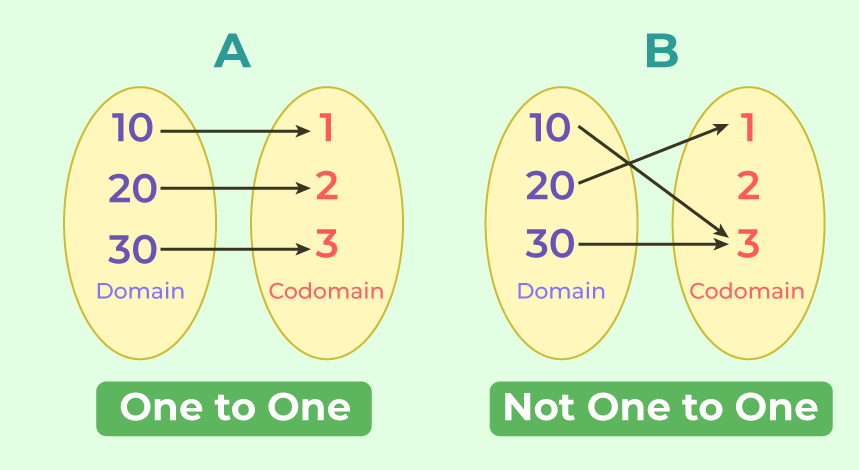
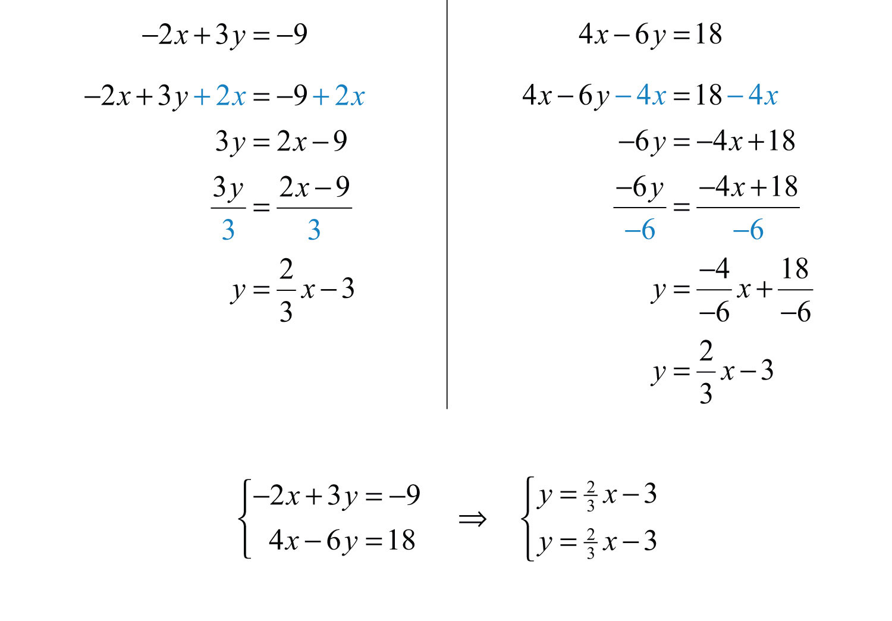
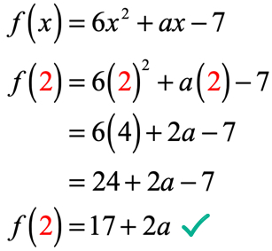
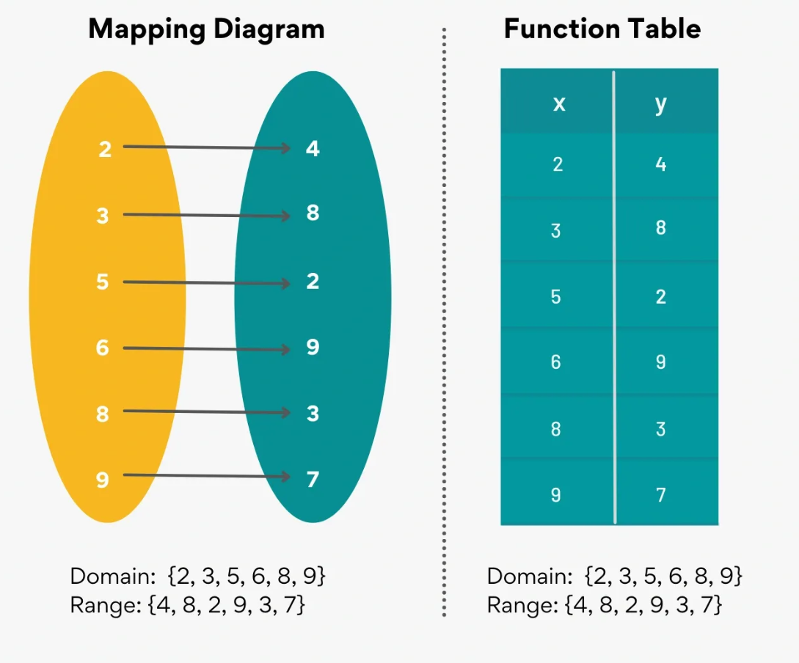
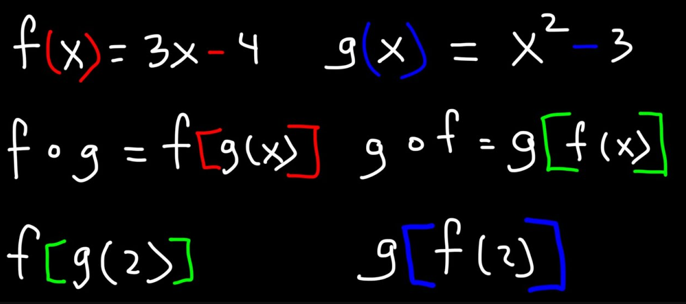
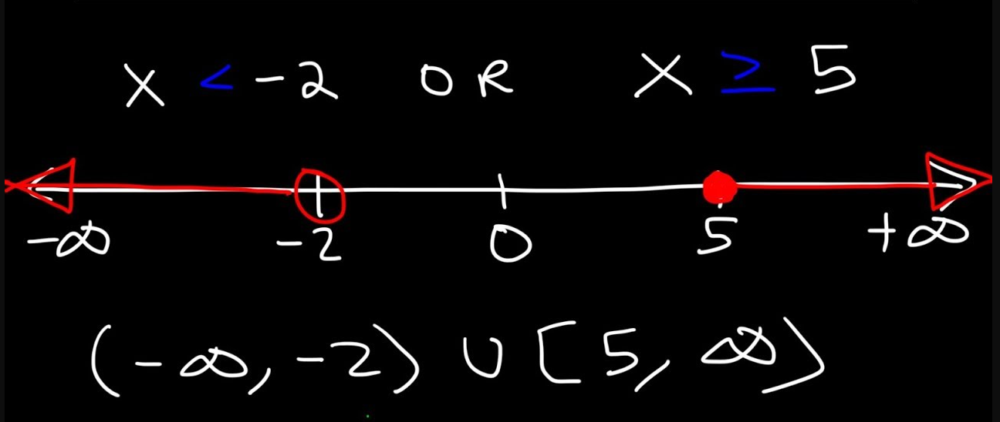
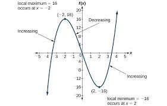

In mathematics, a functions is defined as an equation that defines the relationship between an independant variable, and a dependent variable.
One-to-one functions are those that have a corresponding y variable for every x variable. Every corresponding value has exactly one solution.
Linear systems are functions that were expanded to have three variables: the independant, the dependent, and the control. In a linear system, all three are linear. In order to solve for a variable, substitue 0 for the other variable and solve both equations. Repeat until the equation is solved.
Evaluating functions is very simple: you are given an interger to represent the variable of a function, substitute the variable for the interger, then solve algebraically.
The domain of a function, often represented by x, is the set of intergers that can be ran through the function. The domain is the set of resulting intergers from the domain.
Function composition is an operation that takes two functions, multiplies them, and produces a new variable from the resulting range.
Interval notation is a way to describe continuous sets of real numbers by the numbers that bound them. Intervals, when written, look somewhat like ordered pairs. However, they are not meant to denote a specific point. Rather, they are meant to be a shorthand way to write an inequality or system of inequalities.
The function interval is said to be positive if the value of the function f (x) increases with an increase in the value of x. In contrast, the function interval is said to be negative if the value of the function f (x) decreases with the increase in the value of x.
